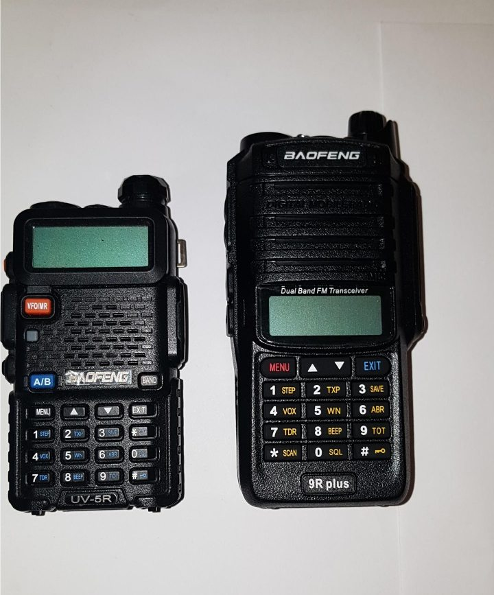
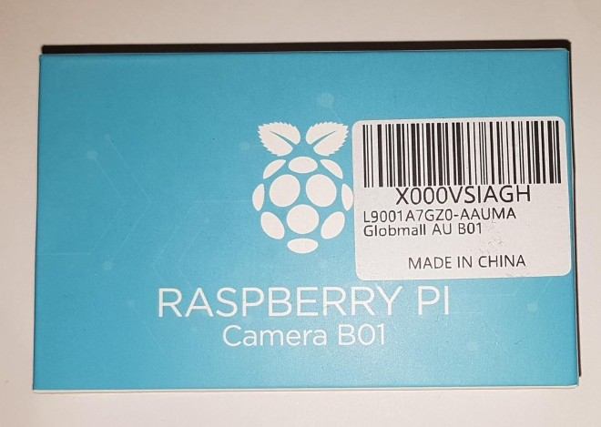
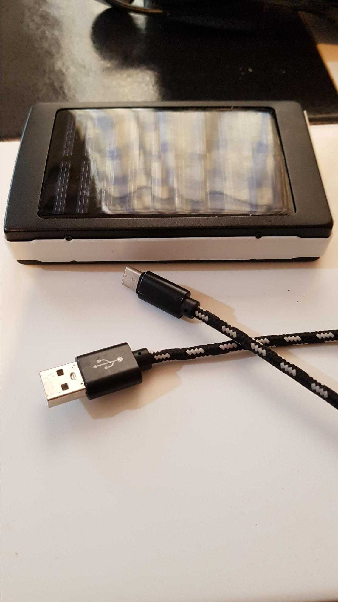
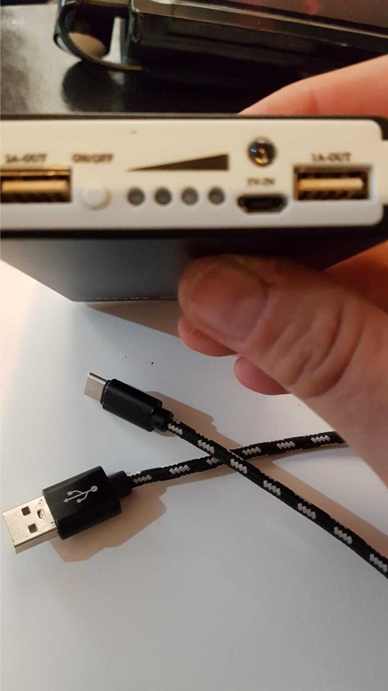
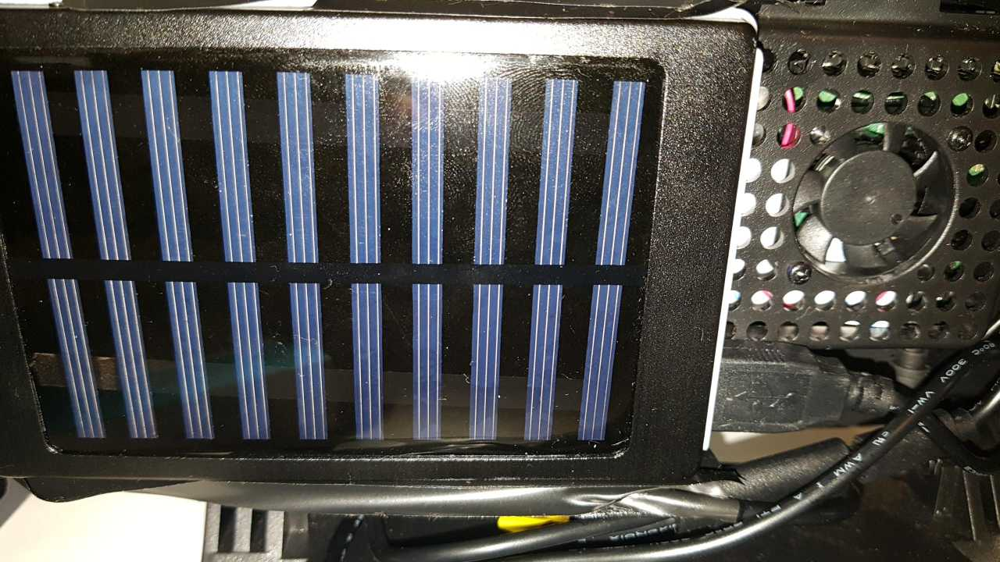

TThe goal of our project is to provide an additional source of communication during a state of emergency or disaster using a combination of new and existing technology. With existing lines of communication like the cell network, it relies on a central trunk exchange, regional exchanges and outer satellite stations (ie cell towers). If a cell tower is destroyed or taken offline during an emergency our project idea provides another source of communication for still images.
We aim to build on new and existing technologies to deliver an easy to use, portable communication device. Starting with a Raspberry PI loaded with an Android operating system, peripherals like USB camera, audio cables, small keyboard/mouse, 30,000 mAh battery pack with 5v 2A output and a Baofeng UV-5R ham radio. By combining these devices, we can create a simple and portable version of an SSTV transmitter and receiver. Using this ham radio model, we can interchange between UH and VH frequency modulation for a possible increase of communication distance and quality.
Looking beyond the original scope to a future state, we would look to move away from the android OS towards a Linux distro for greater flexibility in application development. This would also enable us to add features like SSL message encryption and an outlook of multi-platform architecture.
  Baofeng UV-5R and UV-9RPlus (L); Camera module for raspberry Pi (R)
(R)
The concept of SSTV has been around since the late 1950s. It was first presented by Copthorne Macdonald who utilized an electrostatic monitor and a cathode ray tube to demonstrate the transmission of a 120x120 pixel image within a 3khz max frequency. Since then, this technology has been embraced by CB services, ham radio enthusiasts and many other types of operators who have utilised it. The first high profile use of SSTV was in 1959 by the Soviet Space program on the Luna 3 mission. On this mission SSTV would be used to send the first ever black and white photos of the far side of the moon back to earth. Many saw the utility of a technology that enables one to transmit images over such distances and though the desolate vacuum of outer space. Soon enough, the technology had been developed enough to create an advanced form sending steams of images and the first space television was invented and equipped to the Soviet Spacecraft Vostok, piloted in 1961 by Yuri Gagarin – the first man in space. This technology had an output of 10 frames per second at 100 lines per frame video. A later iteration in Vostok 2 had an output of400 lines per frame. This evolved into a second-generation system which was introduced into the Soviet space program in 1975. A very similar concept, also called SSTV was used by NASA around the same time. As each competing Space Program invested large amounts of time and money into this type of technology and both relied on so heavily on SSTV in one format or another, it demonstrates that SSTV was ubiquitous to space travel in general in that era, which shows that there was consensus that at the time, SSTV was the most effective way to transmit images and video in places and situations where no other type of signal can be transmitted. As technology advanced, space communications evolved into more advanced methods, making use of higher frequencies and methods, making use of higher frequencies and analogue technologies giving rise to digital.
  In our current technological age, it would occur to many that there would be no immediate applications to consider for deploying low frequency imaging technologies such as SSTV, when one can just use a smart phone and send an MMS or video. Indeed, why even carry a bulky radio for receiving transmissions when the near cheapest of mobile phone can receive digital radio via mobile internet. This however operating under a false assumption that modern digital devices thar are transmitting and receiving on the 4G networks are providing a comparable if not superior device and service than UHF / VHF transceivers and SSTV.
If we take into consideration the recent regularity of bushfires worldwide (particularly with recent intense bushfires in the eastern states of Australia and areas of California with large populations of introduced Eucalypt trees). It is a common occurrence to see the removal of, or at least the extreme reduction of mobile phone signal signal coverage within a bushfire with due to gas plasma generated from the intense heat of such fires. This issue is further exacerbated by the likely damage to mobile phone infrastructure. As most emergency workers communications systems are based on UHF/VHF systems, the higher frequencies cannot be utilised due to signal degradation from gas plasma. This leaves those with low band radio transceivers with some form of operational communications, but this is limited only to verbal transmissions. This leaves everybody from civilians to emergency workers with the same problem: How to effectively send/receive data in an emergency situation when conventional communication methods are direly ineffective? Although not involving fire, a similar problem was experienced by civilians and emergency workers in the wake of Hurricane Katrina in New Orleans, USA. Due to the mass flooding and Hurricane damage, much of the mobile phone infrastructure was damaged and rendered inoperable. This led to a situation where an entirely new communications system needed to be created running on UHF/VHF bandwidth, where hundreds of amateur radio operators were “deputised” to act as dispatchers to coordinate with emergency services to direct emergency operators to people in need of assistance as well as convey important status update. From these two scenarios, and many other similar ones that have occurred - it can be seen that in situations where conventional communications systems are not possible, low frequency radio transmissions provide a limited form of communication. The limitation of using radio transmissions in such a way are that it is not possible to send/receive images on a traditional transceiver.
If we look back at history where RF technology was used to transmit images from space, we can see that there are methods of sending images and video via radio and that SSTV was the most effective way to transmit images and video in places and situations where no other type of signal can be transmitted. With the advent of android SSTV type apps being available on mobile devices, SSTV is already being utilised by hobbyists and with a further development of appropriate hardware, this type of older technology can be coupled with something new to create a viable means of sending images/video in an emergency scenario.
We propose creating an integrated SSTV encoder/decoder unit, with onboard camera, microphone and speaker. This will be housed in a heat resistant (insulated and internally cooled), glass fibre reinforced hardcase, with internal and external shock resistant padding.
WMost of the materials and components needed for this project are pre-existing. Using minicomputers such as Raspberry Pi 4b+, one can add modular cameras, speakers, touch screens, microphones and battery packs. If all these are combined into a housing, such as the Smart Pi2, one can quite easily and inexpensively build a basic unit.
It has been decided that to keep production costs to a minimum until extra funding can be obtained. Thus, it has been decided to follow the doctrine of “Cheapest Effective”, which generally results in the use of pre-existing inexpensive parts. USB microphones, mini speakers are available in many varying types and can be obtained as simply as just ordering via online marketplaces such as eBay.
Similarly, there are many forms of HDMI touch screens available for the Raspberry Pi, including an official Raspberry Pi 7” touch screen and modular camera unit, both of which can be easily and (relatively) inexpensively procured through many vendors. These official products can be integrated into the Smart Pi 2 Housing, which has an integral cooling fan.
This first prototype was built using a generic 7” touch screen, Raspberry Pi 4b+ (in official case), USB microphone, AAA battery powered mini speaker and a solar powered power bank/external battery. This was originally intended to be encased in a 3.5” touchscreen hardcase enclosure, however there were logistics issues, so an alternative plan was developed to create this prototype.
The intention for this prototype was to use Raspbian OS to run an android emulator to utilise pre-existing SSTV apps such as Robot 36 and SSTV encoder. This method was quickly proven to be unstable and unreliable as it was prone to many errors and in many instances just would not work at all.
Combined with the limitations of the OS and emulator, the build (albeit last minute improvised) was proven to be flimsy and needed to be handled very carefully. Another limitation of this was that the only form of cooling on the unit were heat sinks on the actual Raspberry Pi board and would likely develop too much heat in regular use to be viable in a handheld unit. Another limitation of this is that all images to be encoded and transmitted would need to be uploaded via usb flash drive, as with no camera onboard, there was no way of taking “live” photos. This prototype was quickly scrapped, cannibalised and repurposed to produce a second prototype.
This is the most current prototype. The problems and limitations of the previous iteration were taken into account and largely resolved or at least mitigated to some extent.
This prototype was built using the Smart Pi 2 enclosure, using the same Raspberry Pi 4b+ recovered from the previous prototype. The Smart Pi2 enclosure also enables one to integrate the official Raspberry Pi camera into the unit so an onboard camera was installed in the unit. The same usb microphone, speaker and power supply was installed on the unit and this was proven to be a much more physically stable unit. As the Smart Pi2 comes with an integrated cooling fan, the cooling issues were partially mitigated – enough so that it would remain cool enough to function as a handheld unit.
With respect to operating system, It was decided from recommendation from a knowledgeable team member to switch to Lineage OS, which is an open-source version of Android OS. This has removed any need for emulation software and has proven to be much more stable and significantly more simplicity in operation.
Although this prototype has been far more satisfactory than the previous iteration it is far from the ideal. As previously mentioned, the cooling issue has only partially been mitigated, and the unit can manage its own heat but would likely be extremely sensitive to heat from external sources. Also, it needs to be considered that any unit in the field would need to be built “work tough”, and the plastic housing is not particularly strong. Another thing that must be considered is that this unit is not shock proof so could easily be damaged from general movement if not carefully protected whilst in transit in the field.
From this point onwards, the project would be looking at creating a “work tough” prototype for field testing. This will involve creating a mock-up housing which will be 3d printed, and if deemed appropriate, production of this will be outsourced to create a glass reinforced plastic housing.
More cooling fans and insulation will need to be installed in the unit and the unit will need some form of protection to mitigate impact/shock damage. This is likely to take the form of internal and external rubber shock absorption. Funding will be required for this step and further ones, so the applications for grants and crowdfunding will occur before these new developments take place.
With respect to software, proprietary software for this project ideally needs to be developed. This will take the form of an SSTV encoder/decoder app purpose built for Lineage OS. Further along the line, SSL encryption may also need to add if there is demand for an encrypted platform.
Once all this has been achieved, the units would be field tested in a non-emergency situation, then stress tested in a temperature-controlled environment to simulate a bushfire. The units wiill also be shock tested to ensure they are hardy enough for field use, then given to a firefighting or some type of emergency response unit for feedback.
Project Manager - Someone to maintain an overall view, track, coordinate and manage progress, budget, and liaise with critical externals (funding agents, target market governance). It is also critical to document the project to ensure transparency and robust documentation and explanations for sponsors and market.